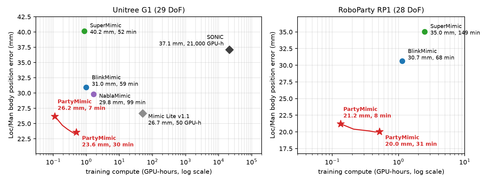
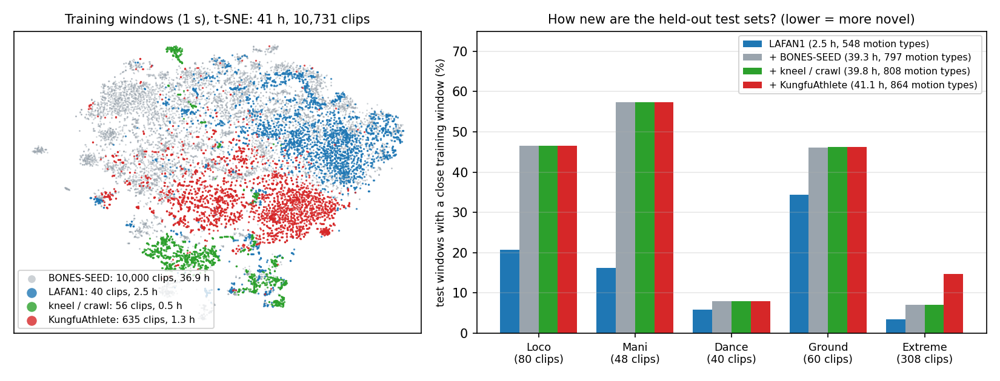
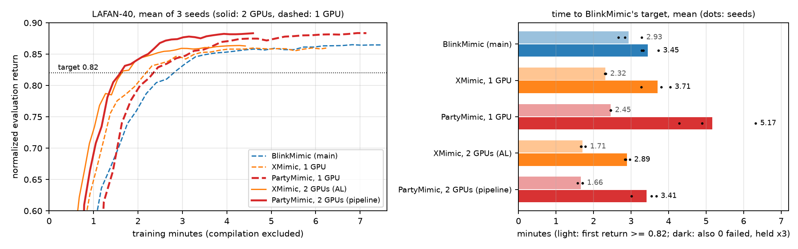
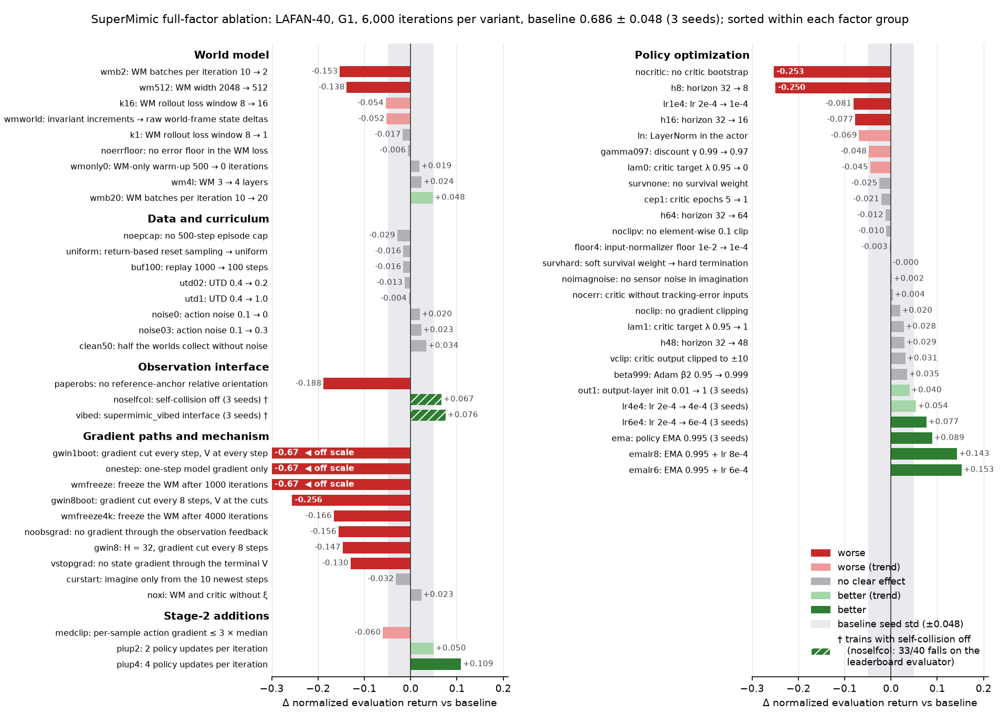

Results on held-out motions
Every method is trained on the same 10,745 clips: LAFAN1, a 10k diversity subset of BONES-SEED, 56 kneeling and
crawling clips of our own, 635 KungFuAthlete clips and 14 XtremeMotion clips. It is tested on five held-out sets: Loco (80 clips),
Mani (48), Dance (40) and Ground (60) from MotionDecode, a different motion-capture source, and Extreme (308):
KungFuAthlete martial arts, jumps and flips, held out by whole source video. RP1 uses the same motions retargeted to
RP1. PartyMimic comes with two reference encoders: an MLP (default) and a cross-attention encoder
(attention, --ref_enc xattn).
| Method | Training | Mean | Loco | Mani | Dance | Ground | Extreme |
|---|---|---|---|---|---|---|---|
| Unitree G1 · body position error (mm, lower is better), completion below | |||||||
| SONIC (NVIDIA GEAR, official) | 21,000 GPU-h | 55.1 | 28.7100% | 45.5100% | 48.699% | 65.786% | 87.075% |
| Mimic Lite v1.1 (official) | 50 GPU-h | 57.1 | 25.099% | 28.394% | 43.355% | 93.666% | 95.447% |
| SuperMimic (official code, rebuilt mjlab interface) | 99 min | 57.5 | 33.3100% | 37.299% | 56.096% | 75.182% | 85.971% |
| NablaMimic (official config, 2 h) | 120 min | 52.6 | 32.499% | 30.2100% | 47.792% | 73.482% | 79.568% |
| BlinkMimic (main preset) | 59 min | 53.5 | 32.4100% | 30.6100% | 54.696% | 66.492% | 83.375% |
| XMimic (BlinkMimic main in JAX) | 50 min | 53.1 | 33.899% | 30.8100% | 54.598% | 63.889% | 82.874% |
| PartyMimic, MLP (default) | 28 min | 38.4 | 26.0100% | 21.4100% | 36.295% | 51.594% | 57.170% |
| PartyMimic, attention | 43 min | 37.4 | 25.1100% | 21.799% | 34.796% | 51.095% | 54.474% |
| RoboParty RP1 · body position error (mm, lower is better), completion below | |||||||
| SuperMimic (official code, rebuilt mjlab interface) | 99 min | 59.4 | 35.1100% | 34.4100% | 53.299% | 93.183% | 81.169% |
| BlinkMimic (main preset) | 68 min | 53.6 | 32.1100% | 28.0100% | 49.897% | 80.991% | 77.475% |
| XMimic (BlinkMimic main in JAX) | 59 min | 53.6 | 31.2100% | 28.1100% | 49.397% | 81.390% | 78.176% |
| PartyMimic, MLP (default) | 29 min | 39.3 | 22.6100% | 16.3100% | 33.197% | 71.590% | 52.868% |
| PartyMimic, attention | 43 min | 38.7 | 22.4100% | 16.5100% | 31.897% | 71.792% | 51.373% |
| PartyMimic, sparse keypoints, MLP | 31 min | 42.3 | 23.8100% | 19.2100% | 36.599% | 76.588% | 55.469% |
| PartyMimic, sparse keypoints, attention | 47 min | 41.3 | 23.3100% | 18.5100% | 35.599% | 74.091% | 55.173% |
PartyMimic rows use the current recipe with --std_scale 0.35 (--muon_wd 0.1, adaptive clip allocation, the long-run guards of
Training to 320k without collection noise, and the end-effector terms --wrist_kernel 0.5 --obs_err kp
--wrist_payload 2: a narrower wrist position kernel, the keypoint error as a policy input (sparse5 has it already)
and a hidden 0–2 kg wrist payload in training; the deployed inputs are unchanged; the commands are in the
README). Under a hidden 2 kg wrist payload these terms cut the wrist error from about 56 to 19 mm on G1
and from 57 to 16 mm on RP1 (joints, MLP); they cost strict Extreme success, about 1.5 points on G1 and 4 on RP1
(RP1 MLP, 4 seeds: 72 vs 68%). The shipped checkpoints are seed-0 runs of this recipe trained with the released code (MLP, joint references).
Against the prior defaults of the first release (std_scale 0.35, no Muon weight decay), like for like (training mix,
12,000 iterations, 2 seeds, absolute-heading error, MLP), the earlier version of this recipe (earlier guards, no
end-effector terms) already tracks at least as precisely, five-set mean 45.1 vs 45.1 mm on G1 and 46.4 vs 47.8 mm on RP1.
The training defaults are the deployment recipe: these kernels, guards and end-effector terms plus a 5–20 ms
command lag in training (--act_lag 1,4), without the clip allocation and --obs_err kp; under a
topic-based deployment latency they cut RP1 ankle chatter from 1.40° to 0.39° and foot slip from 3.75 to
1.03 cm/s (Sim2real).
Scored by the sim2real leaderboard
MuJoCo sim2sim evaluator after ONNX export: every clip played from start to end, failure when the pelvis height error
exceeds 0.3 m or the gravity direction error exceeds 0.8. Error is the local body position error over the tracked part
of each clip, with the reference turned by the relative pelvis heading of robot and reference (no absolute heading); completion is the tracked share of each clip, except under Extreme, where it is the strict success: the share of clips played to the end with the pelvis orientation error never above 57° for 0.2 s; Mean is the mean error of the five sets. All trained methods learned from the same library, the training mix plus the 14 XtremeMotion clips once each, for 12,000 iterations (NablaMimic: its
2-hour budget, run as the 18,205 updates it reaches in 2 h on our RTX 4090) with 2 seeds; the table gives the means. PartyMimic trains with its adaptive clip allocation and anti-collapse guards; every baseline keeps its own sampler and recipe. SuperMimic is the authors' code (HybridRobotics/supermimic, proprioceptive actor) on a rebuilt mjlab interface. Training is the wall-clock time of 12,000 iterations on an
otherwise idle RTX 4090 (i9-14900K), measured in a separate full run for PartyMimic and SuperMimic. Our cards are 48 GB editions; the MLP fits the standard 24 GB card: with
only 24.1 GB left free, G1 and RP1 runs kept the same speed and peaked at 22.6 and 23.4 GB.
Training data and how new the test sets are

We describe every 1-s window by heading-invariant root, joint and hand / foot kinematics, project to 32 dimensions and cluster the 41 h into 2,000 motion clusters. The library spans 918 distinct motion types (the exponential of the cluster entropy): LAFAN1 alone 534, BONES-SEED adds 312, kneeling / crawling 12 and KungfuAthlete, with only 1.3 h, 59; the 14 XtremeMotion clips (2 min) add 1. A test window counts as covered when a training window lies within the median distance between windows of different training sources. Only 47% of Loco, 57% of Mani, 8% of Dance, 46% of Ground and 15% of Extreme windows are covered: most test motion is new to every method. KungfuAthlete training clips raise the Extreme coverage from 7% to 15%.
MLP or attention
The attention encoder lets a causal Transformer over the observation history query the goal frames, so the
robot's own dynamics shape how it reads the reference. It lowers the G1 error on Ground by
0.5 mm and on Extreme by 2.7 mm, and the mean by
1.0 mm (RP1: 0.6 mm), at 1.6× the
training time. The MLP fits a 24 GB card; the attention encoder needs more memory, or --pi_batch 1024
on 24 GB, which costs G1 2.7 mm on Ground and 2.1 mm on Extreme.
--pipeline splits training over two GPUs for 1.6–1.9× the speed.
| Encoder | G1 time | RP1 time | G1 mean error | RP1 mean error | GPU memory |
|---|---|---|---|---|---|
| MLP (default) | 28 min | 29 min | 38.4 mm | 39.3 mm | 22 GB peak: fits 24 GB |
| Attention | 43 min | 43 min | 37.4 mm | 38.7 mm | > 24 GB (or --pi_batch 1024) |
Sparse keypoints: one command for any body
With --interface sparse5 the command is six poses per frame: the pelvis pose, the head
orientation and the poses of both wrists and both ankles, 51 numbers and no joint angles. Any body with a pelvis,
a head, two hands and two feet can be written this way: a person in a motion-capture suit, a VR tracker set, a video
pose estimate, or another robot. The command does not depend on a robot's joint layout.
The same LAFAN1 motion as captured from a person and retargeted to Unitree G1 and RoboParty RP1, each written as the same six keypoint poses (spheres, with their orientation axes). The person's axes are aligned to G1's at the first frame.
Three additions let the policy follow such a command nearly as well as full joint references:
- The observation adds the robot's own keypoint errors, from forward kinematics of its joint encoders.
- A keypoint-to-joint network, fit to the motion library and frozen, estimates the reference pose for the
reference-action skip (
--kp_skip). - An auxiliary head predicts the reference joint angles from the policy's reference latent (
--kp_aux).
On RP1 the mean whole-body error over the five sets is 42.3 mm from keypoints against
39.3 mm from joint references with the MLP (41.3 vs 38.7 mm with attention),
below every baseline that sees the full joint reference (best: 53.6 mm). The keypoints themselves are
tracked within 2 mm
of joint references on Loco/Mani and Dance, 37–43% below the best baseline. tools/export_deploy_onnx.py
exports the policy with a keypoint input (ref_kp) and a deployment YAML.
| Reference | Encoder | Loco/Mani | Dance | Ground | Extreme | Extreme, whole body |
|---|---|---|---|---|---|---|
| RoboParty RP1 · wrist and ankle position error (mm, relative to the own pelvis heading) | ||||||
| Joint | MLP | 23.3 | 39.9 | 64.1 | 76.1 | 52.868% |
| Sparse keypoints | MLP | 24.8 | 42.1 | 75.3 | 80.3 | 55.469% |
| Joint | attention | 23.3 | 37.8 | 64.0 | 74.0 | 51.373% |
| Sparse keypoints | attention | 23.6 | 40.1 | 70.1 | 79.5 | 55.173% |
| Joint | BlinkMimic | 39.4 | 70.3 | 83.1 | 117.2 | 77.475% |
| Joint | XMimic | 39.9 | 70.3 | 83.8 | 118.1 | 78.176% |
The RP1 sparse-keypoint policy (MLP, seed 0) in sim2sim. Only its command is drawn: the six target poses, placed in the robot's own pelvis heading frame as the policy reads them, and a red line from each of the robot's wrists and ankles to its target. Locomotion and Dance are the median clips of their sets; Extreme is the martial-arts clip of the videos below.
The same policy on the XtremeMotion flips and other inverted moves (in the training library, see below): it completes 8 of the 14 clips under the strict criterion (played to the end, pelvis orientation error never above 57° for 0.2 s), against 7 for the joint-reference MLP of the same seed.
Drawn as above; the number is the body position error of the clip.
Sim2sim on held-out motions: zero-shot
Rollouts from the evaluator (MuJoCo, deterministic policy, default MLP encoder, seed 0). Loco, Mani, Dance and Ground show the clip with the median error of its set. Extreme shows two fast clips with clean references, chosen by us: a 12-second fist routine (faster than 63% of the Extreme clips; error 37 mm) and a jump (faster than 86%; 49 mm). The robot is solid, the reference a blue ghost, both at their global poses.
Why the fast Extreme clips are harder
The Extreme references are estimated from monocular video. We split the 308 clips into thirds by reference speed (95th percentile of the wrist and ankle speed) and measured every G1 rollout:
| G1, Extreme | Slowest third | Fastest third |
|---|---|---|
| Reference wrist / ankle speed | 0.8 m/s | 4.5 m/s |
| Body position error | 21 mm | 70 mm |
| Robot behind the reference | 20 ms | 20 ms |
| Reference foot sliding while on the ground | 0.06 m/s | 0.98 m/s |
| Largest gap between robot and reference root | 0.3 m | 1.3 m |
The robot is not late: it trails by one or two control steps, and shifting the reference by that much lowers the error by only 9%. Two other things grow with speed. In the fast clips the reference's feet slide over the ground at about 1 m/s while in contact, an artifact of the video estimate; the robot plants its feet, so its position drifts away from the reference and the ghost runs off. And the fastest swings exceed what the actuators deliver: the robot reaches 82% of the reference speed. Over all clips the error follows foot sliding (rank correlation 0.81) about as closely as speed (0.84). RP1 shows the same pattern (fastest third: 87% of the speed, 0.86 m/s sliding).
The 14 XtremeMotion clips (OmniXtreme's public set) are a different case: the training library holds each of them once, so they are not held out, and most are flips and other inverted moves. Under the same strict criterion the default policy completes 12 of the 14 on G1 and 7 on RP1. Three inverted moves that both robots complete:
Rollouts from the evaluator as above (MuJoCo, deterministic policy, default MLP encoder, seed 0); the number is the body position error of the clip. The robot is solid, the reference a blue ghost, both at their global poses.
Speed on LAFAN: learned in 3–5 min
This comparison is on the LAFAN dataset (LAFAN-40: the 40 G1 LAFAN1 clips, used for both training and evaluation), XMimic's speed benchmark, not on the held-out test sets above. XMimic rebuilds BlinkMimic's main recipe in JAX and reports BlinkMimic's LAFAN-40 target in 0.91 min on four H100s. We ran its 1-GPU and 2-GPU (AL) trainers, BlinkMimic main and PartyMimic on our two RTX 4090s, under XMimic's protocol, 3 seeds each. PartyMimic keeps its recipe unchanged; it was not tuned for this benchmark. In the comparison above XMimic matches BlinkMimic (G1 mean error 53.1 vs 53.5 mm).

| Method | GPUs | it/s | First return ≥ 0.82 | Held ×3, 0 failed | Held ×3, with start-up | Return at 3,500 it |
|---|---|---|---|---|---|---|
| BlinkMimic (main) | 1 | 7.8 | 2.93 min | 3.45 min | 3.62 min | 0.865 |
| XMimic, 1 GPU | 1 | 9.3 | 2.32 min | 3.71 min | 3.96 min | 0.860 |
| PartyMimic, 1 GPU | 1 | 8.2 | 2.45 min | 5.17 min | 5.57 min | 0.883 |
| XMimic, 2 GPUs (actor | learner) | 2 | 13.2 | 1.71 min | 2.89 min | 3.17 min | 0.863 |
PartyMimic, 2 GPUs (--pipeline) | 2 | 12.7 | 1.66 min | 3.41 min | 3.82 min | 0.883 |
- Return 0.82. PartyMimic needs the fewest iterations (1,200–1,300; BlinkMimic 1,300–1,600; XMimic 1,400–1,500). On two GPUs it gets there as fast as XMimic (1.66 vs 1.71 min, 1.8× BlinkMimic). On one GPU XMimic's faster iterations make up for that (2.32 vs 2.45 min).
- Zero failures. PartyMimic is slower to the full target. One or two hard clips (
dance1_subject1,jumps1_subject2) keep failing, so zero failures held over three checkpoints comes at 2,100–3,100 iterations (XMimic 1,900–2,400, BlinkMimic 1,600–1,800). BlinkMimic and XMimic run evaluation-guided probe sweeps that search for exactly these failures among the training clips. PartyMimic dropped them because they did not improve held-out tracking (see the recipe). - Final quality. At the end of the 3,500-iteration budget PartyMimic's return is 0.883; the others reach 0.860–0.865.
- Where PartyMimic's speed comes from. On one GPU, the motion latents of all 32 imagined steps are computed in
one batched pass, and every Adam update (the critic's and the Adam half of Muon) runs on one flat buffer. Together these cut the policy update from 86.5 to
78.4 ms and raise training from 7.65 to 8.2 it/s. With
--pipeline, GPU 0 collects data and fits the world model while GPU 1 updates the policy and the critic on the previous iteration's data and world model, which gives 1.6× the 1-GPU throughput. The transfers between the GPUs run through pinned host memory on side streams and overlap the compute. The policy crosses as soon as its step is done, during the critic fit. Linear weights cross as bf16, which is exact because they only enter bf16 autocast matmuls. This matters here: the second 4090's PCIe link runs at x1 (about 1.6 GB/s measured), so a 36 MB fp32 policy alone would take over 20 ms to cross.
Protocol. LAFAN-40: the 40 G1 LAFAN1 clips, both for training and evaluation, with the same files
as XMimic (checked against its SHA-256 list). Every run trains 3,500 iterations with a checkpoint every 100. Each
checkpoint plays every clip once from its first frame per replica (4 replicas), without randomization or noise. A clip
fails when the training termination triggers. BlinkMimic and PartyMimic checkpoints are scored by BlinkMimic's
eval_batch.py, XMimic's by its JAX evaluator, which XMimic reports agrees with it to +0.001.
Training minutes exclude the first log interval's excess over the steady interval for every method, by XMimic's
tools/exclude_compile.py rule. That is compilation and CUDA-graph capture for the PyTorch trainers, and
the first-execution overhead left in XMimic's clock, since XMimic compiles before its clock starts. The
with-start-up column adds back each method's start-up with warm compilation caches (seeds 1 and 2): 0.17 min for
BlinkMimic, 0.26 / 0.28 min for XMimic (its ahead-of-time compilation), 0.41 min for PartyMimic. The very first run on
a machine compiles from scratch and takes longer: 3.3 / 2.0 min more for XMimic 1 GPU / AL, 1.9 min for the
PartyMimic pipeline. Hardware: two RTX 4090
(48 GB), i9-14900K. The two-GPU methods share the x1 link of the second GPU. XMimic AL runs its probe process on the
learner GPU under CUDA MPS, as in its README.
Adaptive mechanisms: data, sampling, terrain
Three parts of PartyMimic adapt to the library instead of being tuned per dataset: which clips to train on, where the resets go, and what each clip is performed on. All three use the same 1-s motion windows and only the robot's own model, so G1 and RP1 go through the same code.
Diversity-selected data
The 1-s windows of the 71,132 non-mirrored BONES-SEED clips (144 h) are clustered, and clips are picked evenly over
the clusters (tools/diversity). A 10k selection covers every content label and motion type of
the pool; a random 10k misses 44% of the contents. This selection is the BONES-SEED part of the training library;
SuperMimic trains on all of BONES-SEED.
| 10k BONES-SEED clips | Hours | Content labels (of 3,742) | Motion types (of 146) | Pool window to nearest selected, p50 |
|---|---|---|---|---|
| Random | 18.7 | 2,106 | 114 | 0.108 |
| Diversity-selected, duration-matched | 22.3 | 3,742 | 146 | 0.098 |
| Diversity-selected (training library) | 36.9 | 3,742 | 146 | 0.079 |
Content labels and motion types are BONES-SEED's own annotations; the last column is the RMS feature distance from each pool window to its nearest window in the selection (lower: the selection represents the pool better).
Adaptive sampling
Resets are spread over motion clusters instead of over duration (--div_k 24), with a share for the
clips that failed recently. Ground motions are short and rare: by duration they get 8% of the resets, by cluster
30%, and removing the cluster balance costs Ground 6–19 mm. SuperMimic samples by return; on PartyMimic's library
(G1, 10,731 clips, 12,000 iterations, five-set mean error) that sampler alone is clearly worse, and kept inside the
cluster and failure shares it is within noise:
| Reset sampler | Seeds | Five-set mean (mm) |
|---|---|---|
| PartyMimic: cluster-balanced + failure share | 5 | 54.7 |
| SuperMimic ReturnSampler inside the cluster / failure shares | 1 | 54.0 |
| SuperMimic ReturnSampler alone | 1 | 60.1 |
Automatic terrain
Many BONES-SEED clips are performed on something: a 50 cm box, a chair, stairs, a wall, a ladder. On flat ground
they cannot be tracked. --terrain plays every clip through the robot's MJCF, reads the supports off its
contacts (a still raised foot: boxes and steps; the pelvis resting with the center of mass outside the feet: seats;
back or hands against something: walls; feet and hands raised together: ladders), builds up to 16 static boxes per
clip and checks them physically: no body inside a box, and no stretch of more than 0.8 s off the floor that does
not rest on a box top. Clips that fail are never trained (743 of 130,026 G1 clips, 1,346 RP1). The simulator places
the boxes at every reset; the world model and the critic get a height scan, the policy stays blind, so the
deployed inputs are unchanged.
| Full BONES-SEED, one RTX 4090, every clip from its first frame | Iterations | Training | All clips | Terrain clips |
|---|---|---|---|---|
| Unitree G1 · 129,205 clips, 4,902 with terrain | ||||
| PartyMimic, flat ground | 30,000 | 2.0 h | 96.96% | 26.4% |
PartyMimic, --terrain | 3,000 | 13 min | 99.05% | 89.1% |
PartyMimic, --terrain | 30,000 | 1.3 h | 99.65% | 94.8% |
PartyMimic, --terrain (best checkpoint) | 170,000 | 6.8 h | 99.80% | 97.2% |
| RoboParty RP1 · 127,702 clips (R2R retargets), 4,934 with terrain | ||||
PartyMimic, --terrain | 3,000 | 20 min | 99.01% | 83.8% |
PartyMimic, --terrain | 100,000 | 4.3 h | 99.57% | 93.5% |
Completion: the clip is played to its end without the pelvis height error exceeding 0.3 m or the gravity
direction error exceeding 0.8 (tools/eval_chunks.py). G1 stays at or above 99% from 3,000 iterations on;
RP1 from 80,000 on (one dip to 98.1% at 70k on fast jogging turns). Stairs and ladders remain the hard part (G1 at
170k: 71% and 25%); the ladder is a crude model and the policy cannot see the next rung. Both runs used an earlier
version of the check (821 G1 and 2,324 RP1 clips dropped). For reference, the SuperMimic paper reports 25 failed
clips of 129,514 after 3 h, under its own setup and evaluation, which we have not reproduced. Per-category tables
are in the README.
Training clips with their inferred boxes, rolled out in MuJoCo by the terrain-trained policies; the robot is solid, the reference a blue ghost. Examples chosen by us; the success rates are in the table above.
The PartyMimic recipe and what matters most
PartyMimic trains with BPTT: the policy gradient is the derivative of an analytic tracking reward through 32 imagined
steps of a learned world model, closed by the critic's value gradient ∇sV. The defaults of
python -m partymimic.train are this recipe. Effects are the change when a factor is removed (G1, held-out
Loc/Man error, ablations on the earlier 9,173-clip library).
| Factor | Setting | Effect when removed | Why |
|---|---|---|---|
| Muon optimizer | --pi_opt muon --wm_opt muon | +10.7 mm (Dance +25) | Orthogonalized updates keep the rare motions' nearly orthogonal gradients from being drowned by the majority. |
| Muon weight decay | --muon_wd 0.1 | −2.4 mm five-set mean | torch.optim.Muon's default decoupled decay; the only official SuperMimic choice that clearly helps PartyMimic. |
| Reward kernels | --std_scale 0.35 | 0.6: within noise; 1.0: +5.5 mm | Narrower than BeyondMimic's 1.0 so BPTT still has slope at cm-level errors. |
| Command lag in training | --act_lag 1,4 | RP1 under a 10–20 ms command delay: ankle chatter 0.39° → 1.37°, foot slip 1.03 → 2.22 cm/s | New joint targets reach the actuators 5–20 ms late in training, as on a topic-based deployment stack; without it the policy turns the delay into chatter (see Sim2real). |
| Horizon 32 | --horizon 32 | 16 steps: +5.9 mm | Shorter chains lean on ∇sV, which is only loosely fit. |
| Reference-action skip | --pi_ref_skip | +5.6 mm | The network refines the next reference pose instead of rebuilding it. |
| Policy EMA | --pi_ema 0.995 | +3.4 mm | Single updates are noisy at this batch size; the average removes the noise. |
| Evaluator's collision model | --robot g1mj | LAFAN falls 14/40 vs 3/40 | The policy exploits whatever contacts the world model learned from the training simulator. |
| Value-gradient consistency | --v_gcons 0.5 | +1.0 mm | Fits ∇sV to the true return gradient already computed by the backward pass. |
| Diversity-balanced resets | --div_k 24 | Ground +6–19 mm | Resets spread over motion clusters instead of duration, so ground motions get 30% of them instead of 8%. |
| Self-imitation | --sil 1 | +0.5 mm early | Real better-than-V actions guide the policy while the world model and critic are still inaccurate. |
Why SuperMimic works: full-factor ablation
PPO and SuperMimic differ in where the policy gradient comes from. In PPO the simulator is a black box: each sample contributes one advantage that scales ∇θlog π(a|s). SuperMimic fits a world model on real steps, unrolls the policy 32 steps inside it, scores every imagined state with the analytic tracking reward and the last one with the critic, and backpropagates through the whole chain, so every state tells its action which way to move.
Stage 1 of the study ablated SuperMimic itself, factor by factor, on our reimplementation (LAFAN-40, G1, 6,000 iterations per variant, one variant per factor). The score is the normalized evaluation return (mean of the last two evaluations, deterministic policy). The baseline over 3 seeds is 0.686 ± 0.048, and single-seed |z| < 1.5 counts as noise. Δ is the change from the baseline.

gwin1boot, onestep, wmfreeze) run off the scale.All variants
| Variant | What it tests | Score | Δ | Verdict |
|---|---|---|---|---|
| Baseline (3 seeds) | ||||
base_s0 seed 0 | seed noise | 0.719 | +0.038 | |
base_s1 seed 1 | seed noise | 0.658 | -0.023 | |
base_s2 seed 2 | seed noise | 0.650 | -0.023 | |
| World model | ||||
k1 WM rollout loss window 8 → 1 | multi-step autoregressive vs one-step model loss | 0.656 | -0.017 | no clear effect |
k16 WM rollout loss window 8 → 16 | longer autoregressive window | 0.619 | -0.054 | worse (trend) |
wmworld invariant increments → raw world-frame state deltas | naive MBRL parameterization (no translation / yaw invariance) | 0.621 | -0.052 | worse (trend) |
noerrfloor no error floor in the WM loss | near-constant components dominating a std-normalized loss | 0.666 | -0.006 | no clear effect |
wm512 WM width 2048 → 512 | world-model capacity | 0.535 | -0.138 | worse |
wmonly0 WM-only warm-up 500 → 0 iterations | need for a model-only phase | 0.692 | +0.019 | no clear effect |
wmb2 WM batches per iteration 10 → 2 | amount of world-model fitting | 0.520 | -0.153 | worse |
wmb20 WM batches per iteration 10 → 20 | more world-model fitting | 0.721 | +0.048 | better (trend) |
wm4l WM 3 → 4 layers | more world-model capacity | 0.696 | +0.024 | no clear effect |
| Policy optimization | ||||
nocritic no critic bootstrap | role of the critic at H = 32 | 0.428 | -0.253 | worse |
h8 horizon 32 → 8 | short horizon (bias from the critic) | 0.430 | -0.250 | worse |
h64 horizon 32 → 64 | long horizon (gradient variance / explosion) | 0.661 | -0.012 | no clear effect |
noclip no gradient clipping | is clipping needed | 0.692 | +0.020 | no clear effect |
noclipv no element-wise 0.1 clip | does the element-wise clip act | 0.663 | -0.010 | no clear effect |
beta999 Adam β2 0.95 → 0.999 | second-moment adaptation speed | 0.708 | +0.035 | no clear effect |
out1 output-layer init 0.01 → 1 (3 seeds) | small init (initial action ≈ default pose) | 0.713 | +0.040 | better (trend) |
ln LayerNorm in the actor | does LN slow learning | 0.604 | -0.069 | worse (trend) |
floor4 input-normalizer floor 1e-2 → 1e-4 | normalizer floor | 0.670 | -0.003 | no clear effect |
survhard soft survival weight → hard termination | differentiable termination probability | 0.672 | -0.000 | no clear effect |
survnone no survival weight | role of the termination signal | 0.648 | -0.025 | no clear effect |
noimagnoise no sensor noise in imagination | noise as regularizer / deployment consistency | 0.674 | +0.002 | no clear effect |
nocerr critic without tracking-error inputs | critic features | 0.677 | +0.004 | no clear effect |
vclip critic output clipped to ±10 | community fix against value divergence | 0.703 | +0.031 | no clear effect |
lr1e4 lr 2e-4 → 1e-4 | learning rate | 0.591 | -0.081 | worse |
lr4e4 lr 2e-4 → 4e-4 (3 seeds) | learning rate (community choice) | 0.726 | +0.054 | better (trend) |
lr6e4 lr 2e-4 → 6e-4 (3 seeds) | learning rate | 0.750 | +0.077 | better |
ema policy EMA 0.995 (3 seeds) | weight averaging (community) | 0.761 | +0.089 | better |
lam0 critic target λ 0.95 → 0 | bias / variance of the critic target | 0.628 | -0.045 | worse (trend) |
lam1 critic target λ 0.95 → 1 | bias / variance of the critic target | 0.701 | +0.028 | no clear effect |
gamma097 discount γ 0.99 → 0.97 | effective horizon and value scale | 0.624 | -0.048 | worse (trend) |
cep1 critic epochs 5 → 1 | critic fitting strength | 0.652 | -0.021 | no clear effect |
h16 horizon 32 → 16 | horizon curve | 0.596 | -0.077 | worse |
h48 horizon 32 → 48 | longer gradient chain | 0.702 | +0.029 | no clear effect |
emalr6 EMA 0.995 + lr 6e-4 | EMA × higher learning rate | 0.825 | +0.153 | better |
emalr8 EMA 0.995 + lr 8e-4 | EMA × higher learning rate | 0.816 | +0.143 | better |
| Data and curriculum | ||||
noise0 action noise 0.1 → 0 | identifiability of ∂f/∂a | 0.692 | +0.020 | no clear effect |
noise03 action noise 0.1 → 0.3 | wider action coverage | 0.696 | +0.023 | no clear effect |
clean50 half the worlds collect without noise | covariate shift (community) | 0.707 | +0.034 | no clear effect |
uniform return-based reset sampling → uniform | adaptive curriculum | 0.657 | -0.016 | no clear effect |
noepcap no 500-step episode cap | episode length | 0.643 | -0.029 | no clear effect |
utd1 UTD 0.4 → 1.0 | less fresh data | 0.669 | -0.004 | no clear effect |
utd02 UTD 0.4 → 0.2 | more fresh data | 0.660 | -0.013 | no clear effect |
buf100 replay 1000 → 100 steps | freshness vs diversity | 0.656 | -0.016 | no clear effect |
| Observation interface | ||||
paperobs no reference-anchor relative orientation | paper observation (strongest community factor) | 0.484 | -0.188 | worse |
noselfcol self-collision off (3 seeds) | contact complexity (falls 33/40 on the leaderboard evaluator) | 0.739 | +0.067 | better |
vibed supermimic_vibed interface (3 seeds) | pelvis anchor + reference goal + relative obs + no self-collision | 0.749 | +0.076 | better |
| Gradient paths and mechanism | ||||
gwin8 H = 32, gradient cut every 8 steps | critic share vs gradient-chain length | 0.525 | -0.147 | worse |
onestep one-step model gradient only | multi-step Jacobian propagation | 0.002 | -0.670 | worse |
noobsgrad no gradient through the observation feedback | closed-loop (corrective) gradient | 0.517 | -0.156 | worse |
wmfreeze freeze the WM after 1000 iterations | on-policy refitting / model exploitation | 0.004 | -0.668 | worse |
noxi WM and critic without ξ | deterministic model conditioned on known randomness | 0.695 | +0.023 | no clear effect |
curstart imagine only from the 10 newest steps | diversity of the Dyna start states | 0.640 | -0.032 | no clear effect |
gwin1boot gradient cut every step, V at every step | long chain vs ∇V at the cut (SVG(1)-style) | 0.001 | -0.671 | worse |
gwin8boot gradient cut every 8 steps, V at the cuts | same, SHAC-style | 0.416 | -0.256 | worse |
vstopgrad no state gradient through the terminal V | does the policy use ∇V | 0.543 | -0.130 | worse |
wmfreeze4k freeze the WM after 4000 iterations | is refitting needed once the model is good | 0.507 | -0.166 | worse |
| Stage-2 additions | ||||
medclip per-sample action gradient ≤ 3 × median | heavy-tailed contact gradients (NablaMimic) | 0.613 | -0.060 | worse (trend) |
piup2 2 policy updates per iteration | updates vs wall-clock | 0.723 | +0.050 | better (trend) |
piup4 4 policy updates per iteration | updates vs wall-clock (2.2× slower per iteration) | 0.781 | +0.109 | better |
Conclusions: what dominates and why
- The multi-step gradient through an online-refit world model is the method.
Keeping only the one-step model gradient (
onestep,gwin1boot) gives a score of 0.00, and so does freezing the world model after 1,000 iterations (wmfreeze). With only one model step the policy follows the critic's ∇sV, which nothing supervises. A frozen model is exploited as soon as the policy leaves the region where it is accurate. - The horizon and the critic split the work. Without the critic (0.43), with H = 8 (0.43) or with
H = 16 (0.60), results are clearly worse, while H = 48 or 64 brings no gain. Short chains rely on the
inaccurate ∇sV; longer chains only add variance. The terminal ∇V still matters
(
vstopgrad0.54), but as a tail correction rather than the main signal. - The closed-loop observation path carries most of the useful gradient
(
noobsgrad0.52,gwin80.53). The gradient of how the next observation, and hence the next correction, depends on the state is what teaches feedback control. - Model error becomes gradient error. A smaller world model (
wm5120.54) or less model fitting (wmb20.52) hurts directly; more fitting (wmb20) helps only slightly. - The observation needs the reference relative to the robot (
paperobs0.48). Over long clips, yaw drift is otherwise unobservable. - Optimization knobs: policy EMA (+0.09, 3 seeds) and a 2–3× higher learning rate help, and
combined they give the best result (
emalr60.83). These carry over to PartyMimic. Everything else (λ, critic epochs, action noise, UTD, replay size, reset distribution, survival weighting) is within noise. - Caveat: turning off self-collision scores better here (+0.07, 3 seeds), but 33 of 40 LAFAN clips then fall on the leaderboard evaluator. Any factor that changes the simulator must be re-checked under the deployment evaluator. This is why PartyMimic trains on the evaluator's collision model.
Official SuperMimic choices on PartyMimic (full library)
After the official code opened, we ported its design choices as switches and tested each one on PartyMimic's full library (mix_kf, 10,731 clips, 12,000 iterations, G1). Score: mean body-position error over Loco/Mani, Ground, Dance, Extreme and XM14 (mm, lower is better). The ported row turns every official choice on and PartyMimic's extras off; the official code itself, on a rebuilt mjlab interface, is in the results.
| Change on PartyMimic | Seeds | Five-set mean | Time | VRAM | Verdict |
|---|---|---|---|---|---|
Prior defaults (std_scale 0.35, muon_wd 0) | 5 | 54.7 | 0.44 h | 22 GB | baseline |
+ --muon_wd 0.1 | 4 | 52.3 | 0.45 h | 22 GB | better tracking |
+ --muon_wd 0.1 --std_scale 0.6 | 4 | 54.3 | 0.52 h | 22 GB | same tracking, smoother |
| + policy LN-GELU | 3 | 53.0 | 0.51 h | 26 GB | noise / cost |
| + soft-termination max | 2 | 53.2 | 0.44 h | 22 GB | noise |
+ v_max clamp | 1 | 53.2 | 0.45 h | 22 GB | noise |
| + WM 10 batches / iter | 1 | 52.9 | 0.52 h | 22 GB | noise |
| + goal stride 5 | 2 | 53.9 | 0.44 h | 22 GB | noise |
| + official ReturnSampler (keep fail/div shares) | 1 | 54.0 | 0.44 h | 22 GB | noise |
| + ReturnSampler alone (drop fail/div) | 1 | 60.1 | 0.45 h | 22 GB | worse |
| + reward kernel 1.0 | 2 | 59.8 | 0.58 h | 22 GB | worse tracking |
| + action-rate penalty −0.25 | 4 | 56.9 | 0.47 h | 22 GB | smoother, worse tracking |
| Official SuperMimic (ported, fp32) | 2 | 68.6 | 1.60 h | 32 GB | far worse |
Only Muon weight decay clearly improves PartyMimic; the defaults keep it. Widening the reward kernel to 0.6 keeps the five-set mean within noise of the prior defaults and improves foot slip and action smoothness under deployment-like perturbations (Sim2real); the defaults keep 0.35 and train with a command lag instead, which targets the chatter a deployment stack's latency causes. Everything else from the official release is noise or worse on this library; dropping PartyMimic's failure / diversity reset shares hurts a lot.
Training to 320k: what the long-run recipe rests on
Every result above is at 12,000 iterations. To choose a recipe for longer runs we trained PartyMimic (release recipe plus each guard, G1, MLP) toward 320k iterations on the full library (mix_kf, 10,731 clips) and scored every saved checkpoint: lib500 (500 training clips) and the leaderboard sets. A diverged run is not restarted; the divergence is the result.

| Guards | Seed | lib500 mm 96k / 160k / 200k / 260k / 320k | End: L/M · Ground · Dance mm (completion) | Critic loss end / min | Accuracy check |
|---|---|---|---|---|---|
| No guards (release) | 0 | 19.6 / – / – / – / – | 23.3 · 71.2 (78%) · 37.2 (95%) at 96k | – | abrupt divergence at 143.1k |
| 1 | 19.5 / 19.0 / – / – / 21.2 | 24.5 · 73.2 (87%) · 37.3 (95%) | ×7.7 | lib500 2.2 mm above its earlier best at 320k; critic drift warning from 118.2k (×7.7 at the end) | |
Critic Adam β2 0.95--v_beta2 0.95 | 0 | 19.7 / – / – / – / – | 23.5 · 68.4 (82%) · 37.6 (95%) at 96k | – | abrupt divergence at 102.8k |
Gradient-consistency floor--gc_den_floor 1.0 | 0 | 19.8 / 20.3 / 60.1 / – / – | 24.4 · 64.2 (90%) · 37.3 (98%) at 160k | – | abrupt divergence at 229.6k |
V clip + spike skip--v_clip 10 --wm_guard 5 --v_guard 5 | 0 | 19.2 / 18.9 / 18.5 / 18.5 / 18.4 | 23.7 · 68.3 (88%) · 36.4 (95%) | ×1.3 | pass |
| 1 | 19.9 / 18.6 / – / – / 18.1 | 24.3 · 67.3 (83%) · 37.1 (95%) | ×1.0 | pass | |
| 2 | 19.7 / 19.6 / 19.8 / 22.6 / 26.5 | 29.0 · 85.2 (68%) · 40.6 (82%) | ×22.2 | lib500 3.0 mm above its earlier best at 260k; critic drift warning from 72.9k (×22.2 at the end) | |
V clip + spike skip + floor (homepage runs)--v_clip 10 --wm_guard 5 --v_guard 5 --gc_den_floor 1.0 | 0 | 19.3 / 18.8 / 18.4 / 18.3 / 18.3 | 23.8 · 66.8 (83%) · 36.8 (98%) | ×1.2 | pass; critic drift warning from 168.2k, recovered |
| 1 | 19.2 / 19.5 / – / – / 20.1 | 25.1 · 72.2 (73%) · 38.5 (88%) | ×1.8 | pass | |
| 2 | 19.3 / 19.7 / 25.6 / 36.8 / 45.9 | 43.8 · 86.3 (27%) · 48.5 (42%) | ×10.4 | lib500 6.3 mm above its earlier best at 200k; critic drift warning from 143.1k (×10.4 at the end) | |
V clip + spike skip, raw-output loss--v_clip 10 --v_clip_raw --wm_guard 5 --v_guard 5 | 0 | 18.7 / 18.0 / 17.9 / 17.9 / 17.7 | 22.5 · 71.0 (90%) · 36.2 (95%) | ×2.1 | pass; critic drift warning from 199.2k, recovered |
| 1 | 18.7 / 18.1 / 18.0 / 17.9 / 18.0 | 23.4 · 67.4 (88%) · 36.3 (98%) | ×1.1 | pass | |
| 2 | 18.9 / 18.7 / 18.4 / 18.4 / 18.2 | 23.1 · 69.0 (78%) · 36.8 (98%) | ×3.7 | pass; critic drift warning from 66.7k (×3.7 at the end) | |
| 3 | 18.6 / 18.3 / 18.1 / 18.0 / 18.1 | 23.4 · 69.2 (85%) · 36.8 (98%) | ×1.2 | pass; critic drift warning from 180.1k, recovered | |
V clip + spike skip + floor, raw-output loss--v_clip 10 --v_clip_raw --wm_guard 5 --v_guard 5 --gc_den_floor 1.0 | 0 | 19.3 / 18.7 / 18.7 / 22.2 / 23.8 | 24.7 · 71.9 (83%) · 39.6 (90%) | ×1.3 | lib500 3.5 mm above its earlier best at 260k |
| 1 | 19.2 / 19.2 / 18.6 / 18.7 / 19.4 | 24.1 · 68.6 (83%) · 37.0 (95%) | ×1.5 | pass; critic drift warning from 233.8k, recovered | |
| 2 | 19.2 / 18.9 / 18.3 / 18.3 / 18.2 | 23.7 · 68.1 (92%) · 37.2 (95%) | ×1.7 | pass; critic drift warning from 221.9k, recovered | |
| 3 | 19.1 / 18.5 / 18.3 / 18.3 / 18.8 | 23.6 · 69.2 (85%) · 36.5 (92%) | ×4.4 | pass; critic drift warning from 223.0k (×4.4 at the end) | |
No guards, no collection noise--action_noise 0 | 0 | 19.6 / 18.8 / 18.6 / 188.5 / 270.6 | 270.4 · 255.0 (0%) · 264.3 (0%) | – | abrupt divergence at 237.1k |
| 1 | 19.5 / 18.8 / 18.6 / 18.8 / 18.8 | 24.2 · 67.3 (90%) · 37.2 (95%) | ×5.5 | L/M 1.1 mm above its earlier best at 320k; critic drift warning from 205.6k (×5.5 at the end) | |
| 2 | 19.3 / 18.7 / 18.4 / 18.6 / 18.6 | 23.3 · 65.6 (92%) · 37.0 (95%) | ×2.0 | pass; critic drift warning from 174.9k, recovered | |
V clip + spike skip, raw-output loss, no collection noise (long-run recipe)--v_clip 10 --v_clip_raw --wm_guard 5 --v_guard 5 --action_noise 0 | 0 | 19.5 / 18.5 / 18.6 / 18.3 / 18.3 | 24.1 · 71.4 (90%) · 36.8 (98%) | ×6.9 | pass; critic drift warning from 291.2k (×6.9 at the end) |
| 1 | 19.4 / 18.9 / 18.7 / 18.7 / 18.6 | 23.9 · 69.1 (77%) · 36.8 (95%) | ×1.5 | pass; critic drift warning from 83.0k, recovered | |
| 2 | 18.9 / 18.2 / 18.1 / 18.1 / 17.9 | 23.3 · 69.1 (90%) · 36.8 (98%) | ×1.8 | pass; critic drift warning from 105.0k, recovered | |
| 3 | 19.1 / 18.7 / 18.4 / 18.3 / 18.3 | 23.4 · 67.3 (88%) · 36.3 (95%) | ×1.2 | pass |
- Without guards a long run breaks. Seed 0 diverges abruptly at 143.1k, after a disturbance its sampling order reproduces; seed 1 survives, but its critic drifts from 118.2k and its lib500 ends 2.2 mm above its best. SuperMimic's Adam β2 0.95 on the critic diverges earlier (102.8k); the gradient-consistency floor alone only postpones it to 229.6k.
- V clip + spike skip carries seeds 0 and 1 through 320k while lib500 keeps improving (19.2 → 18.4 and 19.9 → 18.1 mm from 96k). Adding the floor (the guards of the homepage runs) passes on both.
- A second failure: the policy comes to rely on the collection noise. On seed 2 neither guard set diverges and the training reward does not move, yet accuracy collapses after 160k (lib500 26.5 and 45.9 mm at 320k). The release recipe adds Gaussian noise (std 0.1) to every action it collects, and the policy reads its last applied action, so the noise is part of its own input. Evaluated with that noise, the collapsed checkpoints recover: clips completed from their first frame 54.0% → 98.4% (with the floor) and 91.6% → 98.1% at 320k, back to their 160k level, while a healthy checkpoint only loses 0.4–1.5 mm to the noise (figure below). The same holds for the one floor run with the raw-output loss that fails (seed 0, 95.3% → 98.5% at 260k). Official SuperMimic removed the collection noise for the same reason (bones_full at 300k iterations: 2,315 clean failures with the noise, 1 without).
- Dropping the noise (
--action_noise 0) removes this failure but not the critic's. With V clip + spike skip + raw-output loss, all 4 seeds pass: lib500 17.9–18.6 mm at 320k (0.3 mm behind the same guards with the noise, 17.7–18.2 mm over 4 seeds) and L/M 23.3–24.1 mm, and none of its checkpoints does better with the noise added. Without the guards, dropping the noise is not enough: seed 0 diverges abruptly at 237.1k, seed 1 fails the accuracy check (L/M 1.1 mm above its earlier best at 320k) and only seed 2 passes. The floor is dropped: with the raw-output loss it fails on 1 of 4 seeds with the noise and adds nothing the other guards do not.
The long-run recipe (seed 3 of the table) on one held-out Dance clip at 80k / 160k / 240k / 320k iterations:
DAN_cant_stop_the_feeling, 24–39 s of the 138 s clip, evaluator rollouts (MuJoCo, deterministic policy) played in sync. The reference (blue ghost) is drawn at the robot's root position and heading, so the root drift a long clip accumulates does not separate the two. Error over the whole clip 38.3 / 36.6 / 36.8 / 37.2 mm; lib500 18.8 / 18.7 / 18.4 / 18.3 mm.

s2r_eval.py).Dropping the noise costs no robustness. The 320k checkpoints under the sim-to-real perturbation suite
(s2r_eval.py, 1,024 library clips × 2 from their first frame; every condition but the clean one
starts from the training randomization; the no-guard run that diverged is left out). Clips completed · body position
error in mm:
| Condition | No guards, no noise (2 seeds) | Long-run recipe, no noise (3) | Same guards, with noise (4) |
|---|---|---|---|
| Clean (deployment) | 98.5% · 17.8 | 97.7% · 17.2 | 98.2% · 17.0 |
| Action noise 0.1 (the collection noise) | 98.5% · 19.2 | 97.8% · 18.8 | 98.2% · 18.4 |
| Training randomization | 98.5% · 19.3 | 97.8% · 18.8 | 98.2% · 18.6 |
| Actuation 10 ms late | 98.4% · 20.3 | 97.8% · 19.9 | 98.1% · 19.6 |
| Sensors read 20 ms early | 97.6% · 22.1 | 97.3% · 21.9 | 97.3% · 21.5 |
| PD gains ×0.75 | 97.8% · 49.0 | 97.2% · 51.8 | 97.8% · 53.1 |
| Pushes every 1–3 s | 98.5% · 25.9 | 97.7% · 24.4 | 98.1% · 24.3 |
| Delay + PD ±15% + mass ±10% + pushes | 98.2% · 28.6 | 97.8% · 27.5 | 98.0% · 27.4 |
Without the noise the recipe completes within 0.6 points of the noisy runs under every perturbation, and its error is at most 0.4 mm higher. Joint-target rate (0.83 against 0.84 rad/s), mechanical power (69 against 69 W) and foot slip (2.1 against 2.1 cm/s) are unchanged. The same holds for one motion trained alone: the release recipe on LAFAN1 dance1_subject2 (131 s) for 160k iterations, two seeds with and without the noise, each checkpoint playing the whole clip 256 times from its first frame. Neither degrades (clean error 13.3–13.6 mm, all completed, at 96k, 128k and 160k), and at 160k:
| Condition | One motion, with noise | One motion, no noise |
|---|---|---|
| Clean (deployment) | 100.0% · 13.4 | 100.0% · 13.3 |
| Action noise 0.1 (the collection noise) | 100.0% · 14.9 | 100.0% · 15.2 |
| Training randomization | 100.0% · 15.2 | 100.0% · 15.1 |
| Actuation 10 ms late | 99.8% · 19.0 | 99.8% · 19.1 |
| Sensors read 20 ms early | 65.8% · 26.9 | 67.0% · 26.6 |
| PD gains ×0.75 | 76.6% · 61.8 | 71.9% · 59.3 |
| Pushes every 1–3 s | 99.0% · 27.7 | 98.6% · 27.9 |
| Delay + PD ±15% + mass ±10% + pushes | 94.9% · 35.1 | 94.5% · 34.7 |
Accuracy check: a run passes when it does not diverge, when from 96k on no checkpoint's lib500 error is
more than 1.0 mm above, or its completion more than 2 points below, the best earlier
checkpoint, and when its 320k L/M is within 1.0 mm of its 160k L/M. Critic-loss drift (2.5× its
minimum) is reported as a warning only. The recipe, used for the 12,000-iteration PartyMimic results above as well:
--v_clip 10 --v_clip_raw --wm_guard 5 --v_guard 5 --action_noise 0; no guarded run fails before 160k. --v_clip_raw and
--action_noise (default 0.1) are release flags. The one-motion completions under PD gains ×0.75 and
late sensors move by up to 20 points between the 96k and 160k checkpoints of one run, so two seeds do not separate the two
there.
Sim2real-oriented evaluation
G1 actuators, action scale and default pose match the public mjlab BeyondMimic model used by official SuperMimic; the gap people report on hardware is not from those. We score completion, body error, joint-target rate / jerk, torque saturation and foot slip under perturbations the training never saw (delay, PD scale, mass, push, low friction, soft foot contact). Same clips for every method.
| Method | Seeds | Nominal % / mm | Train DR jerk | Combo slip cm/s | Soft-foot slip cm/s |
|---|---|---|---|---|---|
| Prior defaults | 2 | 98.2 / 18.1 | 70 | 5.72 | 8.10 |
| + Muon wd 0.1 | 2 | 98.3 / 17.9 | 68 | 5.66 | 8.22 |
+ Muon wd 0.1, std_scale 0.6 | 4 | 98.2 / 20.8 | 58 | 5.14 | 7.05 |
| + kernel 1.0 | 2 | 98.3 / 24.9 | 52 | 4.81 | 6.49 |
| + action-rate −0.25 | 4 | 98.0 / 18.7 | 46 | 5.29 | 7.36 |
| Official SuperMimic (ported) | 2 | 97.7 / 33.8 | 51 | 5.40 | 6.73 |
Completion stays ≥96% under delay 20 ms, PD×0.75, push and friction 0.25 for every method.
Switching the solver to the official 10 iterations changes nothing; soft-foot contact is where the prior recipe
slips more than the ported official policy. The 0.6 kernel closes most of that gap while keeping tracking far
ahead of the port (20.8 vs 33.8 mm nominal). The released defaults keep std_scale 0.35 and add the
command lag below.
Deployment latency: command lag in training
A topic-based deployment stack (the sim2real ZMQ pipeline: 5–25 ms random latency) delivers joint targets late.
A policy trained without that delay turns it into ankle chatter and foot slip, most with the end-effector terms.
The defaults train with a command lag (--act_lag 1,4: new targets reach the actuators 5–20 ms late,
drawn per env). RP1, 12k iterations, 2 seeds, MotionDecode manipulation, actions 10–20 ms late and states
5–10 ms old:
| Recipe | Ankle chatter (°) | Joint-target jerk (rad/s²) | Foot slip (cm/s) |
|---|---|---|---|
| Project-page recipe (no lag) | 1.40 | 109 | 3.75 |
| + command lag | 0.63 | 33 | 1.42 |
Defaults (lag, no clip allocation, no --obs_err kp) | 0.39 | 27 | 1.03 |
| Defaults without latency | 0.32 | 24 | 0.98 |
Ankle chatter: high-frequency ankle-pitch RMS, 90th percentile over clips. Over all four MotionDecode splits under the same latency the defaults keep jerk at 113 rad/s² and slip at 6.7 cm/s, against 350 and 13.3 cm/s for the project-page recipe.
Real-robot validation
PartyMimic policies on the physical robots.
Use it
Instructions for data, training, export and evaluation are in the README.
- Data:
tools/data/build_library.sh g1(LAFAN1, the BONES-SEED diversity subset, KungfuAthlete, XtremeMotion, our kneeling and crawling clips shipped in the repository, and the Extreme test set), thenrp1for the RP1 retargets. - Default (MLP):
bash scripts/train.sh logs/g1 --robot g1mj --motion_dir data/motions/g1_mix - Attention encoder: add
--ref_enc xattn(24 GB cards: also--pi_batch 1024). - Sparse keypoints: add
--interface sparse5; export withtools/export_deploy_onnx.py. - Full BONES-SEED with terrain:
tools/data/build_library.sh bones_full, then add--terrain(boxes inferred and checked on the first run; RP1:rp1_full). - Two GPUs: add
--pipeline. Fine-tune on a few clips before deployment:--init <run>/last.pt. - Trained checkpoints (MLP, joint references):
checkpoints/g1_mlp.ptandcheckpoints/rp1_mlp.pt. - Diversity analysis of a library:
tools/diversity/analyze.py.
Agent use
Inside RoboParty, PartyMimic already runs as the whole-body controller under a task agent, INTACT.
- Data: R2S (RP-SceneReal2Sim: an editable simulation scene from one RGB photo) → generation (GPT, Seedance or a model-based generator) → PartyMimic. R2S takes the longest; generation is fast, and fewer than 10 clips per task are enough. INTACT then trains in about 20 minutes.
- Deployment: INTACT → PartyMimic.
RoboParty RP1, replayed in simulation.
A VLM planner on the keypoint interface
The sparse5 interface lets a planner command the robot without retargeting to joints. Qwen3.6-27B (local vLLM, no thinking) sees the head camera and calls skills (walk_to, pick, place_on); a middle layer turns them into a 50 Hz stream of six future keypoints (pelvis, torso, wrists, ankles) sent over the sim2real ZMQ protocol, and the RP1 sparse5 terrain policy tracks it. Task: walk to a table, pick up a box, carry it to the other table, put it on the pad. Over 20 episodes: 14/20 closed loop (17/20 when the target is located once at planning time); Qwen3.6-35B-A3B also 14/20 at a third of the latency.
Picking up a low crate, by real contact
A planner that writes a few keyframes (stand, hands beside the crate, squeeze, lift to the chest) and interpolates them can send six keypoints that no single robot pose reaches at once: hands at a low crate while the pelvis only moves straight down, or the centre of mass ahead of the feet once the crate is in the hands. A whole-body IK layer between the planner and the policy re-solves every 50 Hz frame on the robot model (floating base, joint limits): feet held, hand points on the crate's side faces, the centre of mass of robot and crate kept over the feet, a squat rather than a stoop, knees clear of the crate. Its keypoints, by forward kinematics, are what the policy gets.
The grasp is real contact. Nothing is welded: the hands collide with the crate and hold it only by friction (crate 0.8, hand 0.9). The plan brings the hands down outside the crate, then places them 10–14 cm inside its side faces, so the policy's tracking error against the crate is the squeeze. The policy (RP1, sparse5, terrain-trained, with the hidden 0–2 kg wrist payload in training) never observes the crate.
Over 6 start poses, crate heights 0.10–0.40 m and 1.5, 3 and 5 kg, the keyframes sent directly lift no crate and fall in 39% of the runs (every run at 0.10–0.15 m). Through the IK layer (squeeze 10–14 cm, 216 runs) 59% are lifted and 3% fall: 81% at 1.5 kg, 64% at 3 kg, 33% at 5 kg. Most remaining failures are the grip: the squeeze the policy produces levels off near 36–39 N per hand, while 5 kg needs about 27 N per hand at this friction just to be held, so heavy crates slide out. The policy was trained with a hidden wrist payload, not to squeeze.
MuJoCo sim2sim with elliptic friction cones (impratio 10); each hand's collision shape is the RP1 model's capsule.